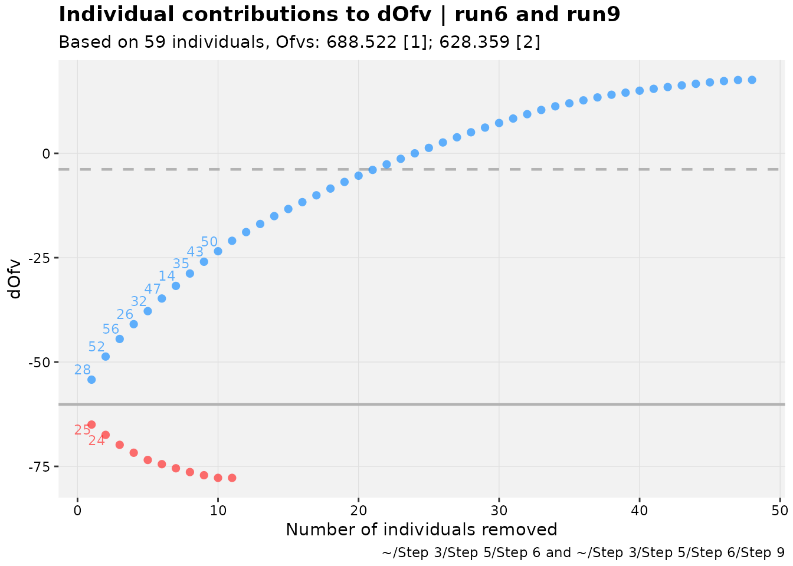

Introduction
A powerful new object building upon the xpose framework
is the xpose_set. Much like how xpose_data is
in essence a list of information and data about the fitted model,
xpose_set is a list of xpose_data (or
xp_xtras) objects with information about how these models
relate to one another.
Creating a set is easy. An important point to remember about usage is
that each set item must have a label. Depending on how the set is
created, the default is to use the name of the xpose_data
object, but if an unnamed list is spliced or any objects share the same
label, an error will occur. Note, however, that duplicate
xpose_data objects can be used, as long as they have
different labels. In the xpose_set() example below, three
example models fitting the same dataset are made into a set, and
alternative labels are used for one version of the set.
xpose_set(pheno_base, pheno_final, pheno_saem)
#>
#> ── xpose_set object ────────────────────────────────────────────────────────────
#> • Number of models: 3
#> • Model labels: pheno_base, pheno_final, and pheno_saem
#> • Number of relationships: 0
#> • Focused xpdb objects: none
#> • Exposed properties: none
#> • Base model: none
xpose_set(base=pheno_base, reparam=pheno_final, reparam_saem=pheno_saem)
#>
#> ── xpose_set object ────────────────────────────────────────────────────────────
#> • Number of models: 3
#> • Model labels: base, reparam, and reparam_saem
#> • Number of relationships: 0
#> • Focused xpdb objects: none
#> • Exposed properties: none
#> • Base model: noneThe print output hints at features that will be explored
in this vignette. A few example sets are in the package that can be used
to test some of the elements discussed here. A relatively complex
example explores typical model-building steps for the common
phenobarbital in neonates dataset, called pheno_set,
diagrammed below.
diagram_lineage(pheno_set) %>%
DiagrammeR::render_graph(layout="tree")Relationships
Relationships between models in a set can be declared with formula
notation, where one or more child models is dependent on one or more
parents (child1+... ~ parent1+...). To demonstrate, parts
of pheno_set can be reproduced.
phrun3 <- pheno_set$run3$xpdb
phrun5 <- pheno_set$run5$xpdb
phrun6 <- pheno_set$run6$xpdb
phrun7 <- pheno_set$run7$xpdb
phrun8 <- pheno_set$run8$xpdb
phrun9 <- pheno_set$run9$xpdb
pheno_stem <- xpose_set(phrun3,phrun5,phrun6, .as_ordered = TRUE)
pheno_stem
#>
#> ── xpose_set object ────────────────────────────────────────────────────────────
#> • Number of models: 3
#> • Model labels: phrun3, phrun5, and phrun6
#> • Number of relationships: 2
#> • Focused xpdb objects: none
#> • Exposed properties: none
#> • Base model: none
diagram_lineage(pheno_stem) %>%
DiagrammeR::render_graph(layout="tree")
pheno_branch <- xpose_set(phrun6,phrun7,phrun8,phrun9, .relationships = c(phrun7+phrun8+phrun9~phrun6))
pheno_branch
#>
#> ── xpose_set object ────────────────────────────────────────────────────────────
#> • Number of models: 4
#> • Model labels: phrun6, phrun7, phrun8, and phrun9
#> • Number of relationships: 3
#> • Focused xpdb objects: none
#> • Exposed properties: none
#> • Base model: none
diagram_lineage(pheno_branch) %>%
DiagrammeR::render_graph(layout="tree")Trees can also be concatenated, using typical R/tidyverse syntax.
pheno_tree <- pheno_stem %>%
# drop phrun6 from stem
select(-phrun6) %>%
c(
pheno_branch,
.relationships = c(phrun6~phrun5)
)
pheno_tree
#>
#> ── xpose_set object ────────────────────────────────────────────────────────────
#> • Number of models: 6
#> • Model labels (truncated): phrun3, phrun5, phrun6, phrun7, and phrun8 (...)
#> • Number of relationships: 5
#> • Focused xpdb objects: none
#> • Exposed properties: none
#> • Base model: none
#> # ℹ 1 more xpdbs
#> # ℹ Use `print(n = ...)` to see more than n = 5
diagram_lineage(pheno_tree) %>%
DiagrammeR::render_graph(layout="tree")The documentation for ?add_relationship contains more
information about declaring and removing relationships. Users should be
aware that model lineage is actually used by some functions that process
xpose_set objects to generate output, so declaring
parentage should be done only when it is valid. This does not mean
necessarily that the child should be nested in the parent(s), but
lineage is considered relevant in functions that compare models.
Comparing models in sets
Models in a set can be compared with a few functions and plots. The
functions for comparison include a diff() method.
diff(pheno_set)
#> [1] -148.723 -37.080 -60.163 -43.281 35.133The method above limits the comparison to the longest lineage in the
provided set, starting at a base model if one is declared. The models
included can be examined by probing with the xset_lineage()
function.
tbl_diff <- function(set) tibble(
models = xset_lineage(set),
diff = c(0,diff(set))
)
tbl_diff(pheno_set)
#> # A tibble: 6 × 2
#> models diff
#> <chr> <dbl>
#> 1 run3 0
#> 2 run5 -149.
#> 3 run6 -37.1
#> 4 run9 -60.2
#> 5 run14 -43.3
#> 6 run15 35.1
pheno_set %>%
remove_relationship(run9~run6) %>%
tbl_diff()
#> # A tibble: 5 × 2
#> models diff
#> <chr> <dbl>
#> 1 run3 0
#> 2 run5 -149.
#> 3 run6 -37.1
#> 4 run10 -0.0230
#> 5 run12 -0.181
pheno_set %>%
set_base_model(run6) %>%
tbl_diff()
#> # A tibble: 4 × 2
#> models diff
#> <chr> <dbl>
#> 1 run6 0
#> 2 run9 -60.2
#> 3 run14 -43.3
#> 4 run15 35.1
tibble(
models = xset_lineage(pheno_set,run6),
diff = c(0,diff(pheno_set,run6))
)
#> # A tibble: 4 × 2
#> models diff
#> <chr> <dbl>
#> 1 run6 0
#> 2 run9 -60.2
#> 3 run14 -43.3
#> 4 run15 35.1xset_lineage() and diff() can also generate
lists if multiple models are passed to ..., which treats
those as base models.
diff(pheno_set, run10,run9)
#> $run10
#> [1] -0.181
#>
#> $run9
#> [1] -43.281 35.133
xset_lineage(pheno_set, run10,run9)
#> $run10
#> [1] "run10" "run12"
#>
#> $run9
#> [1] "run9" "run14" "run15"Models can also be compared through various plots. Many that use
individual objective function values (iOFVs) require these values to be
in the xpdb data. If these are missing and the
xpose_data object is generated based on a NONMEM run, these
can be added with the backfill_iofv() function. We discuss
focusing in another section, but it is useful here,
Two models can be compared one way using an updated version of a
xpose4 function; this is referred to in some places as a
“shark plot”, and it is called xpose4::dOFV.vs.id() in
xpose4. As such, it is called shark_plot() or
dofv_vs_id() in xpose.xtras.
pheno_set %>%
focus_qapply(backfill_iofv) %>%
shark_plot(run6, run9, quiet = TRUE)
There are also functions to use an xpose_set for
model-averaging and other ways to visually explore the impact of model
changes on individual fits which are all documented within the package.
Many of these are considered experimental, but all facilitate further
improvements.
Manipulating a set
We have already explored a few ways to manipulate a set. These
manipulations are distinctly designed so that a user can change the
overall set or xpose_data elements within the set using
fairly intuitive functionality.
Information from xpose_data summary or parameter values
can be “exposed”, which means they become associated with the set item
on the top level. To view these as a table, the function
reshape_set() can be used. Note the exposed data are
denoted by the prefix .. (two dots) in their column
names.
pheno_set %>%
expose_property(ofv) %>%
expose_param(ome1) %>%
reshape_set() %>%
head()
#> # A tibble: 6 × 7
#> xpdb label parent base focus ..ofv ..ome1
#> <named list> <chr> <named list> <lgl> <lgl> <dbl> <dbl>
#> 1 <xp_xtras> run3 <chr [1]> FALSE FALSE 874. 1.69
#> 2 <xp_xtras> run4 <chr [1]> FALSE FALSE 834. 0.608
#> 3 <xp_xtras> run5 <chr [1]> FALSE FALSE 726. 0.198
#> 4 <xp_xtras> run6 <chr [1]> FALSE FALSE 689. 0.239
#> 5 <xp_xtras> run10 <chr [1]> FALSE FALSE 688. 0.243
#> 6 <xp_xtras> run12 <chr [1]> FALSE FALSE 688. 0.232There are methods for the popular dplyr verbs which
attempt to produce the expected results despite the underlying structure
of an xpose_set not being tabular.
pheno_set %>%
select(run3,run15) %>%
names()
#> [1] "run3" "run15"
pheno_set %>%
# Note renaming can affect parentage.
# For simplicity, this method does not change
# parent automatically in child
rename(NewName = run3) %>%
names()
#> [1] "NewName" "run4" "run5" "run6" "run10" "run12" "run11"
#> [8] "run13" "run7" "run8" "run9" "run14" "run15" "run16"
pheno_set %>%
expose_property(ofv) %>%
filter(..ofv < 700) %>%
names()
#> [1] "run6" "run10" "run12" "run11" "run13" "run7" "run8" "run9" "run14"
#> [10] "run15" "run16"
pheno_set %>%
expose_param(ome1) %>%
pull(..ome1)
#> [1] 1.69000 0.60800 0.19800 0.23900 0.24270 0.23200 0.23700 0.22800 0.25400
#> [10] 0.03432 0.17600 0.03870 0.03470 0.04037These verbs are also defined for xpose_data objects, and
it may be desired to “forward” the function to the
xpose_data objects in a set instead of applying them to the
set object. That functionality is available through focusing. Focused
elements in the set automatically forward functions to the
xpose_data objects in the element, and do nothing to
unfocused elements.
focus_test <- pheno_set %>%
focus_xpdb(run3,run15) %>%
mutate(test_col = 1) %>%
unfocus_xpdb()
tail(names(get_data(focus_test$run6$xpdb, quiet=TRUE)))
#> [1] "CWRES" "NPDE" "DV" "PRED" "RES" "WRES"
tail(names(get_data(focus_test$run3$xpdb, quiet=TRUE)))
#> [1] "NPDE" "DV" "PRED" "RES" "WRES" "test_col"Any function can be passed to focused xpose_data objects
with focus_function(). A shortcut for focusing everything,
applying a function and unfocusing everything is available in the form
of focus_qapply().